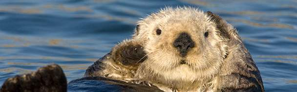

California sea otters eat, sleep, mate and are born and raised in water. Bundled in the densest fur on the planet, otters rarely leave ocean or estuary during their 10 to 20 years of life.
Otters spend five hours per day grooming and playing. Unlike seals, sea otters don't have blubber to keep them warm in frigid 35- to 60-degree (F) ocean waters. They have air-bubble-trapping fur -- the densest fur on Earth. Each square inch of their bodies is covered with 600,000 to one million hairs. An entire human head has only about 100,000 hairs.
Sea otters spend more than a quarter of their day cleaning and rubbing air bubbles and their own body oils into the long, coarse guard hairs and short, fine under-fur that trap the bubbles. Unless their fur becomes matted, from an oil spill, for example, sea otters’ skin never gets wet.
Otters spend eleven hours a day resting and sleeping. Except for some that stake out breeding territories and live alone, male sea otters tend to rest and sleep in rafts. Rafts range from two to 60 or 100 animals. Females and their pups also gather in rafts. Although researchers have recorded otter sounds such as sneezes, distress calls, and pups calling for mothers, they don't know much about sea-otter sounds.
Before napping, otters may wrap kelp or other seaweed around their bodies to anchor themselves. They float on their backs and keep their flippers and paws out of the water to reduce heat loss.
Otters spend eight hours a day feeding. They eat a quarter of their weight…every day.
Sea otters eat more than 40 different animals -- including abalone, sea urchins, crabs, and clams. To find that food, they can dive 350 feet deep and hold their breath for five minutes. Each otter has her or his favorite meal. They use their bellies as dinner tables. They break up their food by pounding it against a rock or glass bottle they put on their stomachs.
California sea otters live at sea, near rocky shores, or in estuaries, such as Elkhorn Slough in Monterey Bay. To keep their body temp-erature at 100 degrees (F), they eat one-quarter of their weight every day. That's like a 160-pound human eating 40 pounds of food daily.
Born in a swirl of water, a sea otter pup is pulled to the surface in its mother's mouth. The wriggling pup, weighing three to five pounds, emerges wide-eyed and wrapped in light-brown fur called natal pelage. Mom's first job is to groom air into her pup's fur. With light and fluffy fur, the pup becomes nearly unsinkable. Pups are born throughout the year, with most appearing between January and March. Very rarely do otters have twins. On the outside chance that two pups are born, the mother is forced to abandon one, because she can care for only one pup. Male sea otters never care for otter pups.
A pup depends on its mother for six to eight months. For a couple of months, it bobs on the surface while mom forages for food. At two-and-a-half months, a pup loses its baby fur. Now it can follow mom to ocean and estuary bottom to learn how to forage and hunt. A pup often picks up its taste in food from its mother. Mom and pup stay together until she's fertile again and a male becomes interested.
Welcome to my blog! I write about wildlife, science, technology, and fascinating things around the world. Feel free to explore more posts or get in touch through the contact page.